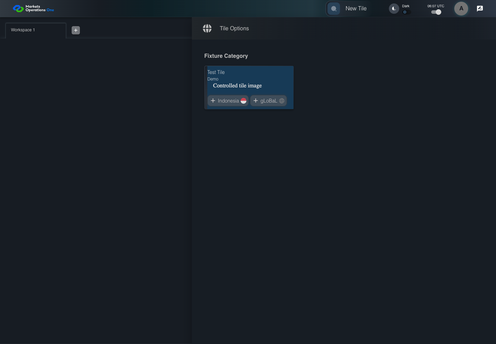

UI-CAT-010 select the declared default regional entry
PASS · application/run-050/ui-cat-010-select-the-declared-default-regional-entry-00cdadaf84a6-attempt-1 · ACTUAL_APPLICATION_LOCAL_SERVICES
Actual current React shell. Controlled login, validation, and activity renewal responses supply UI-USER-01, catalog, and entities. A controlled SystemJS React container displays routes and parameters. Local fixture SVGs replace catalog images. Identity, entitlements, and business tenant behavior are not established.
2026-10-22T06:07:56.573Z to 2026-10-22T06:07:58.889Z
Assertions and result · Artifact manifest · Exact run inputs and source hashes
Result SHA-256:5db61b70df154a2d4053b4108a0552610b8d96aa5d670d7e8c7277123e49debfMachine observations
- source-resolved-route.json
0aba746a7b51b8b958834116ed15bbd85671b14f868fb5c09a69ece40b65a1c6
Screenshot capture: CAPTURED. Named frames: 5.
Step screenshot evidence: COMPLETE. 4/4 canonical steps have execution screenshots.
Canonical step timeline
Given User A is authenticated as fixture UI-USER-01 with the case-specific permissions
Execution: PASSED.
1. step-01 Visible state after step 1: Given User A is authenticated as fixture UI-USER-01 with the case-specific permissions
2026-10-22T06:07:57.903Z · 1440×1000
Step: /Users/lushevol/code/github/ratan-release-impact/workbench/tasks/ui-test-coverage-20261022/test-cases.md:6561
SHA-256:b0494e978fa6918bbd0d74284a0f5130c7fe4c5eff75eaa11fe5be962cab30e0And one grouped entry uses entryName gLoBaL
Execution: PASSED.
2. step-02 Visible state after step 2: And one grouped entry uses entryName gLoBaL
2026-10-22T06:07:58.050Z · 1440×1000
Step: /Users/lushevol/code/github/ratan-release-impact/workbench/tasks/ui-test-coverage-20261022/test-cases.md:6562
SHA-256:ef216db0f89564dad68adc6d56396bc04a00e586330b2dbd2b3496d16ce11c85When User A clicks section with text "Test Tile" inside the tile group with subtitle "Demo" in the fixture category inside the right drawer titled "Tile Options"
Execution: PASSED.
3. step-03 Visible state after step 3: When User A clicks section with text "Test Tile" inside the tile group with subtitle "Demo" in the fixture category inside the right drawer titled "Tile Options"
2026-10-22T06:07:58.156Z · 1440×1000
Step: /Users/lushevol/code/github/ratan-release-impact/workbench/tasks/ui-test-coverage-20261022/test-cases.md:6563
SHA-256:c09f9ebac2500a00609704fc7adec5d989ea1ae3ced768cfed515d6e3c05a4f5Then text with text "<fixture gLoBaL tile route>" inside the selected new tile tabpanel is visible
Execution: PASSED.
4. step-04 Visible state after step 4: Then text with text "<fixture gLoBaL tile route>" inside the selected new tile tabpanel is visible
2026-10-22T06:07:58.505Z · 1440×1000
Step: /Users/lushevol/code/github/ratan-release-impact/workbench/tasks/ui-test-coverage-20261022/test-cases.md:6564
SHA-256:f6d99bfab2a7556ad37169c4bff7b9b778777c6e87ed7df8d57b69ab98726395
Additional named frames

The final visible state after the named test assertions.
2026-10-22T06:07:58.602Z · 1440×1000Step: Test source: /Users/lushevol/code/github/ratan-release-impact/workbench/e2e/audit-specs/catalog-profile-expanded.spec.ts:77
SHA-256:
f6d99bfab2a7556ad37169c4bff7b9b778777c6e87ed7df8d57b69ab98726395Screenshots establish visible state only. Assertions and traces support functional claims.